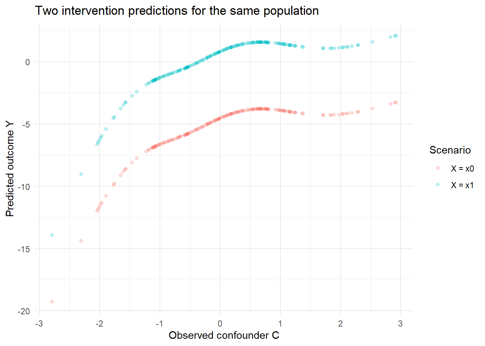

flowchart LR C --> X C --> M1 C --> Y X --> M1 X --> M2 X --> Y M1 --> M2 M2 --> Y
R Workshop: Predictions and G-Computation
Adapted from simple_scm.qmd and SCM_part02.qmd
The scientific setup
For our example, let us consider the following example (not a jackalope example). Suppose our primary goal is to test for the causal effect of an exposure X on a continuous outcome Y.
A baseline confounder C affects both X and Y, and also affects mediator M1. The effect of X on Y is partly direct and partly transmitted through two mediators. Today we estimate the total effect only; the mediator-specific structural equations come later.
Workspace set-up
library(dplyr)
library(tibble)
library(ggplot2)
library(dagitty)
library(mgcv)Step 0: Simulate a dataset to use for the SCM
The code below is retained from simple_scm.qmd.
set.seed(20260408)
n_site <- 4
n_obs <- 5
n_rep <- 10
n <- n_site * n_obs * n_rep
site <- factor(rep(paste0("site_", seq_len(n_site)), each = n_obs * n_rep))
obs <- factor(rep(rep(paste0("obs_", seq_len(n_obs)), each = n_rep), times = n_site))
# crossed random intercepts
b_site_x <- rnorm(n_site, 0, 0.55)
b_obs_x <- rnorm(n_obs, 0, 0.45)
b_site_m1 <- rnorm(n_site, 0, 0.35)
b_obs_m1 <- rnorm(n_obs, 0, 0.30)
b_site_m2 <- rnorm(n_site, 0, 0.35)
b_obs_m2 <- rnorm(n_obs, 0, 0.30)
b_site_y <- rnorm(n_site, 0, 0.70)
b_obs_y <- rnorm(n_obs, 0, 0.55)
# exogenous confounder
C <- rnorm(n, mean = 0, sd = 1.1)
# exposure
X <- 0.85 * C +
b_site_x[site] +
b_obs_x[obs] +
rnorm(n, 0, 1.0)
# mediator 1
M1 <- 1.0 * sin(X / 1.3) +
0.55 * C +
b_site_m1[site] +
b_obs_m1[obs] +
rnorm(n, 0, 0.8)
# mediator 2
M2 <- 0.60 * X +
0.85 * M1 +
0.18 * C +
b_site_m2[site] +
b_obs_m2[obs] +
rnorm(n, 0, 0.9)
# outcome
Y <- 1.15 * X +
1.10 * M2 -
0.42 * (M2^2) +
0.70 * C +
b_site_y[site] +
b_obs_y[obs] +
rt(n, df = 6) * 0.9
dat <- tibble(
site = site,
obs = obs,
C = C,
X = X,
M1 = M1,
M2 = M2,
Y = Y
)
glimpse(dat)Rows: 200
Columns: 7
$ site <fct> site_1, site_1, site_1, site_1, site_1, site_1, site_1, site_1, s…
$ obs <fct> obs_1, obs_1, obs_1, obs_1, obs_1, obs_1, obs_1, obs_1, obs_1, ob…
$ C <dbl> 2.53019368, 0.09841712, -1.07479864, 0.34897694, 0.80689301, -0.5…
$ X <dbl> 0.95443559, 0.20817467, -1.55041162, 2.83542865, 0.30419252, -1.9…
$ M1 <dbl> 2.701884760, -0.566712174, -1.526371293, 1.438314550, 0.936134522…
$ M2 <dbl> 2.7620128, 0.2653152, -1.7551261, 2.9403361, 0.3641560, -2.770621…
$ Y <dbl> 4.0011511, -0.9691240, -5.4194487, 4.5770825, 1.3178349, -7.18640…summary(dat$Y) Min. 1st Qu. Median Mean 3rd Qu. Max.
-24.8498 -5.2079 -1.3382 -2.8798 0.7659 4.5954 Discuss: Which relationships in this system are nonlinear? Why do we know the true causal structure here, but not ordinarily in observational ecology?
Step 1: Encode the DAG and recover the appropriate adjustment set using dagitty in R
Recall that the adjustment set for the total effect should be derived from the DAG; it should not come from guesswork or intuition.
dag_txt <- dagitty("dag {
C -> X
C -> M1
C -> Y
X -> M1
X -> M2
X -> Y
M1 -> M2
M2 -> Y
}")
dag_txtdag {
C
M1
M2
X
Y
C -> M1
C -> X
C -> Y
M1 -> M2
M2 -> Y
X -> M1
X -> M2
X -> Y
}adjustmentSets(dag_txt, exposure = "X", outcome = "Y"){ C }For this DAG, C is the minimal sufficient adjustment set for the total effect of X on Y. Mediators M1 and M2 are deliberately omitted from the total-effect outcome model.
Step 2: Fit an outcome model
We start with a simple model to emphasize the logic of predictions, not model selection.
mod_total <- gam(
Y ~ s(X) + s(C),
data = dat,
family = gaussian(),
method = "REML"
)
summary(mod_total)
Family: gaussian
Link function: identity
Formula:
Y ~ s(X) + s(C)
Parametric coefficients:
Estimate Std. Error t value Pr(>|t|)
(Intercept) -2.8798 0.2026 -14.21 <2e-16 ***
---
Signif. codes: 0 '***' 0.001 '**' 0.01 '*' 0.05 '.' 0.1 ' ' 1
Approximate significance of smooth terms:
edf Ref.df F p-value
s(X) 4.195 5.194 32.26 <2e-16 ***
s(C) 5.038 6.178 13.57 <2e-16 ***
---
Signif. codes: 0 '***' 0.001 '**' 0.01 '*' 0.05 '.' 0.1 ' ' 1
R-sq.(adj) = 0.712 Deviance explained = 72.6%
-REML = 503.15 Scale est. = 8.2094 n = 200Discuss: Is predict(mod_total, newdata = dat) an observational prediction or an intervention contrast?
Step 3: Specify the intervention(s)
The following code is retained from Step 7c of SCM_part02.qmd.
x0 <- quantile(dat$X, 0.25)
x1 <- quantile(dat$X, 0.75)
c(x0 = x0, x1 = x1) x0.25% x1.75%
-1.1060846 0.9555505 Step 4: Create two hypothetical datasets
Keep the observed distribution of C, but assign the same exposure to everyone in each scenario.
dat_x0 <- dat |> mutate(X = as.numeric(x0))
dat_x1 <- dat |> mutate(X = as.numeric(x1))
stopifnot(identical(dat_x0$C, dat_x1$C))Question: Why don’t we change C?
Step 5: Predict outcomes under each intervention
y0_hat <- predict(mod_total, newdata = dat_x0, type = "response")
y1_hat <- predict(mod_total, newdata = dat_x1, type = "response")
effect_by_row <- y1_hat - y0_hat
tibble(
x0 = as.numeric(x0),
x1 = as.numeric(x1),
predicted_mean_x0 = mean(y0_hat),
predicted_mean_x1 = mean(y1_hat),
estimated_contrast = mean(effect_by_row)
)# A tibble: 1 × 5
x0 x1 predicted_mean_x0 predicted_mean_x1 estimated_contrast
<dbl> <dbl> <dbl> <dbl> <dbl>
1 -1.11 0.956 -5.33 0.0214 5.35This is an intervention prediction contrast. Calling it a causal effect requires identification assumptions that we have not yet established.
Step 6: Visualize the predictions
prediction_dat <- tibble(
C = rep(dat$C, 2),
prediction = c(as.numeric(y0_hat), as.numeric(y1_hat)),
intervention = rep(c("X = x0", "X = x1"), each = nrow(dat))
)
ggplot(prediction_dat, aes(x = C, y = prediction, color = intervention)) +
geom_point(alpha = 0.25) +
labs(
x = "Observed confounder C",
y = "Predicted outcome Y",
color = "Scenario",
title = "Two intervention predictions for the same population"
) +
theme_minimal()
Exercise A: Change the intervention
- Replace
x0andx1with the 10th and 90th percentiles of X. - Repeat the predictions. Is the contrast larger?
- What would make these extreme contrasts less credible in an observational dataset?
Exercise B: Conditional versus population-average prediction
# Predict at the mean of C (one representative covariate profile)
one_x0 <- tibble(X = as.numeric(x0), C = mean(dat$C))
one_x1 <- tibble(X = as.numeric(x1), C = mean(dat$C))
conditional_contrast <-
as.numeric(predict(mod_total, one_x1) - predict(mod_total, one_x0))
population_contrast <- mean(effect_by_row)
c(
conditional_at_mean_C = conditional_contrast,
population_average = population_contrast
)conditional_at_mean_C population_average
5.348803 5.348803 Discuss: With the additive model used here, these may coincide (up to numerical precision). Why? What would happen if we added an interaction between X and C?
Exercise C: Modify the model
mod_interaction <- lm(Y ~ X * C, data = dat)
# TODO: predict every row under dat_x0 and dat_x1
# TODO: compare the population average to a contrast at C = 1Exercise D: A deliberately flawed model
mod_unadjusted <- lm(Y ~ X, data = dat)Use the same intervention datasets to calculate the unadjusted prediction contrast. Compare it with the adjusted estimate.
Discuss: Both models generate numerical contrasts. Which DAG paths explain why their causal interpretations differ?
Closing: What have we established?
- We specified a contrast between two interventions on X.
- We used a fitted model to predict Y under each scenario.
- We averaged predictions across the same population.
- We have not proved that the resulting contrast is a causal effect.
Next: positivity, consistency, exchangeability, and how violations affect these predictions.
Source and adaptation note
The simulation and dagitty code are copied from simple_scm.qmd. The interquartile intervention code is copied from SCM_part02.qmd. The newdata standardization exercise is new, to make the intervention-prediction distinction explicit. The simplified GAM deliberately omits the original crossed random-effects modeling and formal mediator propagation; these remain in the source tutorials for subsequent classes.